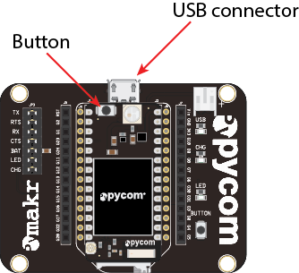
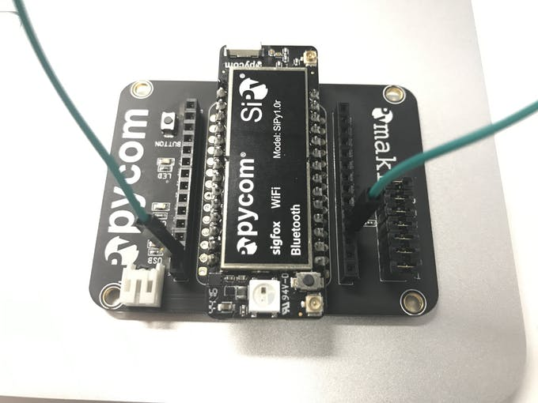

LPWAN Introduction with Sigfox
Low-Power Wide-Area Network (LPWAN) is wireless wide area network designed for long range communications at a low bit rate among things (connected objects). This lab will introduce Sigfox, a proprietry LPWAN and the SiPy multiprotocol development board.
Equipment
- Laptop
- SiPy development board
- PyCom expansion board
- MicroSD cable
Pre-Setup Tasks
Expansion board
Connect the SiPy module to the Expansion Board: - Look for the reset button on the module (located at a corner of the board, next to the LED). - Locate the USB connector on the expansion board. - Insert the module on the expansion board with the reset button pointing towards the USB connector. It should firmly click into place and the pins should now no longer be visible. 
PyCom Firmware Updater
Go to Pycom update tools and follow the download instructions for your particular Operating system. Install the tool annd make sure that it opens correctly.
Put SiPy in Upgrade Mode
You will need to put the SiPy in Upgrade mode in order to obtain an ID and PAC for your SigFox Device. Do this by connecting the G23 pin to the GND pin with a jumper wire 
Upgrade the SiPy
Connect the SiPy in upgrade mode to your computer and run the firmware upgrade tool. Follow the instructions carefully
NOTE: MAKE SURE TO SELECT SIPY FOR THE BOARD AND EUROPE AS THE REGION. OTHERWISE YOU MAY NOT GET THE CORRECT PAC AND ID.
Completing the uprgrade should provide a new ID and PAC number for the device. Record the ID and PAC. You're ready to go...
Activate Device
Sigfox backend password
Check your email, you should have recieved a mail from backend-noreply@sigfox.com with the topic "How to set your password".
Follow the instructions contained in the mail to set your password for the Sigfox backend.
Go to (the sigfox activation page)[https://backend.sigfox.com/activate]. You will see a list of Sigfox-enabled development kits; select Pycom for activating the SiPy.:

Now, for the country, find and select Ireland (the VT logo):
For Device information, enter the ID and PAC number obtained in the Upgrade to SiPy step. Enter the Device ID and PAC number that the Firmware Tool generated for you earlier and fill in the required information. When completed you'll receive an email from Sigfox confirming your account.
You should now be in a position to use the device on the Sigfox network.
Installing Pymakr Plugin (Atom)
- Navigate to the Install page, via Atom > Preferences > Install
- Search for Pymakr and select the official Pycom Pymakr Plugin.
- Click the install button to download and install the Pymakr Plugin.

You should now be able to use Atom to program the SiPi
Writing code for the SiPy
Connect your SiPy to your computer and launch Atom and start the pyMkr add on.
Create a new file called hello_world.py and enter the following code
from network import Sigfox
import socket
# init Sigfox for RCZ1 (Europe)
sigfox = Sigfox(mode=Sigfox.SIGFOX, rcz=Sigfox.RCZ1)
# create a Sigfox socket
s = socket.socket(socket.AF_SIGFOX, socket.SOCK_RAW)
# make the socket blocking
s.setblocking(True)
# configure it as uplink only
s.setsockopt(socket.SOL_SIGFOX, socket.SO_RX, False)
# send some bytes
s.send("Hello World")Check for messages
You should now be able to see your message on the Sigfox Backend. Go to , login and click on the 'Device' tab. You should see your SiPy in the list below; click on it's ID and then select the 'Messages' tab at the side.
You'll see a string of hexadecimal numbers. Sigfox automatically decodes your message as raw hexadecimal so your message "Hello World" should look something like "48656C6C6F20576F726C64".
Open the "Device Type" tab and choose the "Pycom Kit". You'll be presented with an information screen. Find an "Edit" button. Under "Display", you can choose to set the type as String; this will turn your messy hexadecimal message into a more readable ASCII message.